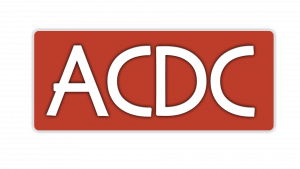

Tu voz, tu voto: tu futuro.
Presidente de ACDC
Ministro de Igualdad e Interculturalidad
Ministra de Economía, Comercio y Empresa
Ministro de Demografía y Aspectos Rurales y Urbanos
Ministra de Ecología y Medio Ambiente
En España siguen existiendo desigualdades, problemas económicos, contaminación ambiental y dificultades para acceder a oportunidades. ACDC nace con el objetivo de afrontar estos desafíos mediante la democracia, el diálogo, el respeto, la cooperación y la cultura. Creemos en una sociedad más justa, sostenible y preparada para el futuro.
Ministerios
Compromiso Democrático
Objetivo: Mejorar España